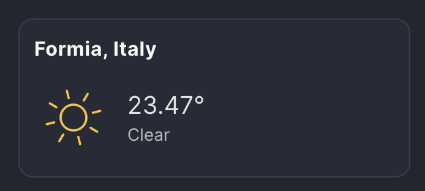

Add a new widget
View SourceWidgets are reusable components that encapsulate data and provide context-specific information to users based on the pages they are currently visiting. They are typically placed in the right sidebar ( refers to the Design Guidelines section to learn more about Bonfire user experience), and developers can define which widgets should appear on each page and in what order.
Developers can include options for users to enable, disable, or rearrange the order of widgets when possible.
A widget usually consists of a title and data formatted in various ways, such as links, data visualizations, actions, or information fetched from third-party apps. In this section, we will create a new widget that utilizes the user's location (if provided) and the bonfire_geolocate library to obtain the correct coordinates. These coordinates will then be used to retrieve the location's weather information using an external library. Additionally, we will create a setting that allows users to optionally include the widget on their profile.
This example is simple yet meaningful because it touches upon different parts of the Bonfire framework during the tutorial. The code for this widget is available here.

Let's code!
The first step is to identify the most appropriate extension for this widget. In this case, we can include the widget in the bonfire_geolocate extension, which already handles all the necessary logic for dealing with geolocations.
Widgets are typically included in lib/web/components/widgets. Bonfire uses Surface on the frontend, so we'll create two files:
widget_forecast_live.exwidget_forecast_live.sface
This forecast widget is a stateless component, meaning it won't handle any internal state. Therefore, the widget_forecast_live.ex code will be quite basic:
defmodule Bonfire.Geolocate.WidgetForecastLive do
use Bonfire.UI.Common.Web, :stateless_component
prop location, :string, default: nil
end
We use :stateless_component, a function that wraps the Surface.Component and includes a list of helpers widely used across most components.
Since we want to include the widget on the user profile, we can gather the location data from there, so we define the location prop.
Widgets are wrapped in a WidgetBlockLive component that takes care of injecting a style and the basic prop as the title. The initial implementation of our widget_forecast_live.sface looks like this:
<Bonfire.UI.Common.WidgetBlockLive widget_title={e(@location, "")}>
hello world
</Bonfire.UI.Common.WidgetBlockLive>
To see our widget, we need to include it in a page. Widgets are included in our right sidebar and are defined within a prop called sidebar_widgets, which is a list that includes guest and user lists (respectively, the widgets to show when the user is visiting a page while not logged in or when the user is logged in).
We'll include our widget in the logged list, specifying it is in the secondary widget section. The final look of our sidebar_widget prop looks like this:
sidebar_widgets = [
users: [
secondary: [
Bonfire.Geolocate.WidgetForecastLive, [location: "Naples, Italy"]
]
]
]
We'll include our widget in the user profile page, located in the Bonfire.UI.Me extension, a library that deals with all the views related to user profiles and settings.
The Bonfire.UI.Me.ProfileLive mount function looks like:
def mount(_params, _session, socket) do
{:ok,
socket
|> assign(LiveHandler.default_assigns(is_nil(current_user_id(socket))))}
end
The default_assigns function includes data needed for dealing with multiple kinds of interactions and permissions. It also fetches the user from the database and ensures all the data is loaded correctly. The location data is fetched in profiles_live_handler.ex:95, and the widget is included in profiles_live_handler.ex:274.
Adding Settings
To ensure the user can decide whether they want to include the widget when visiting any user page, we're creating a new setting that optionally shows the widget based on user input.
In profiles_live_handler.ex:274, the widget is preceded by weather_widget_enabled, a boolean that controls whether the widget should be displayed or not. It makes use of the Settings.get function. You can learn more about defining and returning settings in our Add an Extension Settings section.
We're adding the settings in the edit_profile_info_live.sface component (we may later refactor this to add the setting in the defined extension, but this is still a work in progress):
<form data-scope="set-weather" phx-change="Bonfire.Common.Settings:set">
<Bonfire.UI.Common.SettingsToggleLive
name="Weather"
description={l("Show the Weather widget on user profile")}
keys={[Bonfire.Geolocate, :weather]}
scope={:user}
/>
</form>
At this point, we should be able to see our basic weather widget on our profile page and decide to switch it on and off.
What remains is to include the logic for returning and displaying the weather. We will use the Forecastr library, which is already used in our application and added in the bonfire extension.
The Forecastr library makes use of the Pirate Weather service, so we need a Pirate Weather API KEY. You can generate one on pirateweather.net and add it at the bottom of your .env file:
PIRATE_WEATHER_API_KEY=***********************
The final component code looks like:
{#if e(@location, nil)}
<Bonfire.UI.Common.WidgetBlockLive widget_title={e(@location, "")}>
{#case Forecastr.forecast(:today, e(@location, nil),
units: :metric,
renderer: Forecastr.Renderer.JSON
)}
{#match {:ok,
%{
"description" => weather,
"id" => weather_id,
"temp" => temp,
"name" => weather_location
}}}
<div
class="flex items-center gap-3"
title={l("%{weather} in %{location}", weather: weather, location: weather_location)}
>
<Iconify.iconify icon={"meteocons:#{weather_id}"} class="w-16 h-16" />
<div class="flex flex-col">
<span class="text-xl text-base-content/90">{temp}°</span>
<span class="text-sm text-base-content/70">{weather}</span>
</div>
</div>
{#match _}
{/case}
</Bonfire.UI.Common.WidgetBlockLive>
{/if}
Next Steps
Although this weather widget is relatively basic, it significantly enhances the user experience by providing relevant metadata fetched from external services. This example demonstrates the potential for integrating additional information and functionality into widgets to create a more engaging and informative user interface. To further improve this widget, developers can consider including more data points, such as:
- Current moon position and phase
- Daily amount of daylight hours
- Sunrise and sunset times
- Extended weather forecasts
- Weather alerts and notifications
By incorporating these additional features, the widget can provide users with a more comprehensive overview of their location's weather and astronomical information, making it a valuable addition to their profile page.